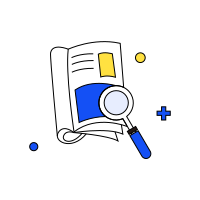
No search result无搜索结果
no-search-result.svg
Search or filter returned no match. The list has data, but the keyword did not hit.搜索或筛选后无匹配项。列表本身有数据，是关键词没命中。
Official illustrations for empty, result and error states. They follow the page theme. Switch Light / Dark at the top right to preview each version.
用于空状态、结果页和异常状态的官方插图，随页面主题切换。可用右上角的 Light / Dark 预览两个版本。

no-search-result.svg
Search or filter returned no match. The list has data, but the keyword did not hit.搜索或筛选后无匹配项。列表本身有数据，是关键词没命中。
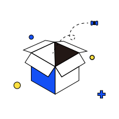
empty.svg
A list, message or notification center has no data at all (no records, no options, no messages).列表、消息或通知中心本身没有任何数据（暂无记录、暂无可选项、暂无消息）。
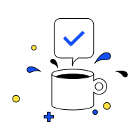
success.svg
Result page after a successful submission or creation.提交成功、创建成功等结果页。
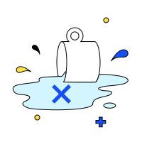
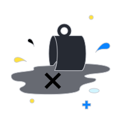
failure.svg
Result page after a failed submission or operation.提交失败、操作失败等结果页。
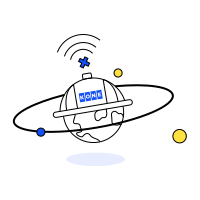
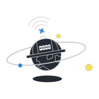
no-network.svg
Offline or request timed out.断网、请求超时。
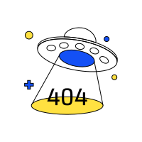
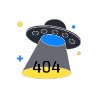
server-not-found.svg
404, or the page or resource does not exist.404、页面或资源不存在。
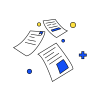
report-file.svg
Placeholder for report, attachment or document modules.报告、附件、文档类模块的占位图。
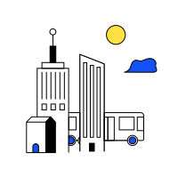
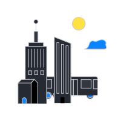
building.svg
Placeholder for project, building or on-site modules.项目、楼宇、现场相关模块的占位图。
visit-calendar.svg
Placeholder for schedule or visit-plan modules.日程、拜访计划相关模块的占位图。
No matching illustrations未找到匹配的插图